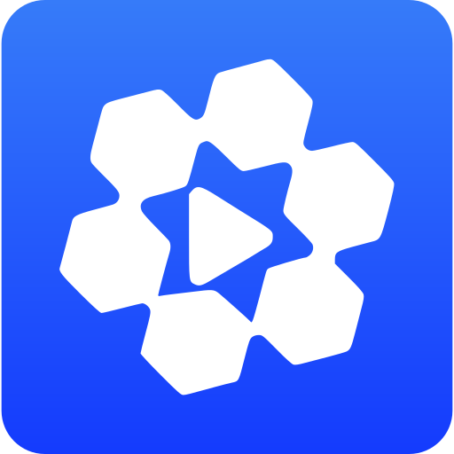

说出需求
用自然表达描述查找方向。

官方入口功能特色ELSE · 别处 · OFFICIAL
把想找的说清楚，把喜欢的整理好。
18+ 成年用户适用 · 内容查找与合集整理
不必一次说完所有条件。通过连续对话调整方向，让每一步选择更清楚。
用自然表达描述查找方向。
按类型、时长等条件筛选。
保存选中的内容，分门别类。
为之后的查看留一个位置。
功能示意 · 具体开放范围以产品实际说明为准
找到官方入口将选中的结果保存到个人合集。内容类型、保存与访问条件以当前产品说明为准。
通过连续对话收窄查找条件，按内容类型与时长筛选，再把选择收进自己的合集。
建议收藏本页，通过以下已登记渠道了解产品。
当前服务涉及成人资源，仅适用于符合年龄及所在地要求的用户。本页不展示资源条目，不承诺通用问答或未开放的AI能力。